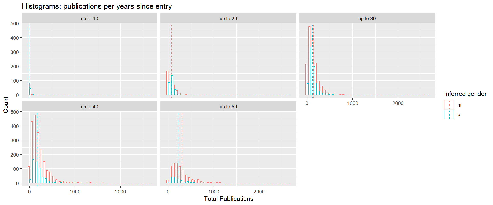
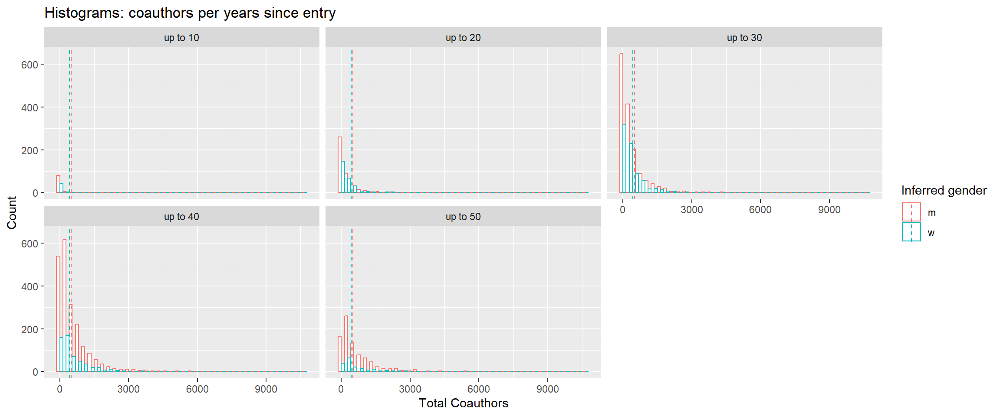
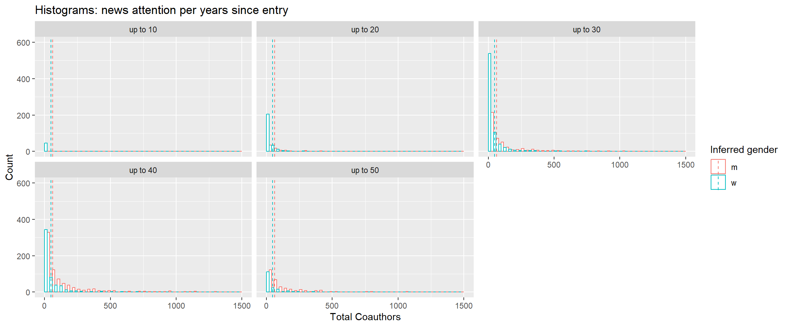
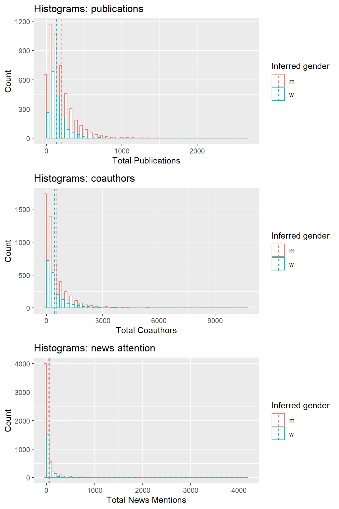
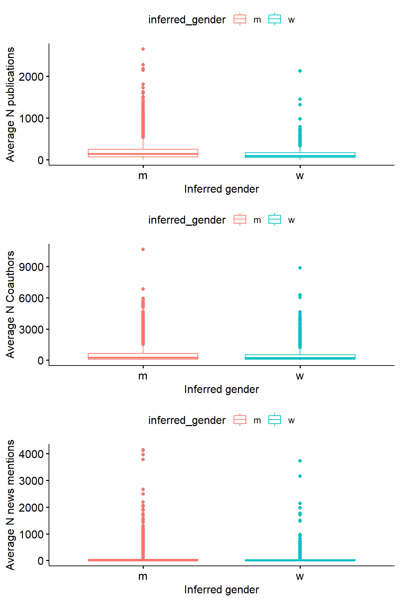

Get an overview of our dataset at the professor level.
Loding the packages, and connecting to the database first.
library(groundhog)
packages_to_load <- c("readr", "dplyr", "tidyr", "ggpubr",
"ggplot2", "knitr",
"tidyverse", "RPostgres", "lubridate",
"digest", "DBI", "RODBC", "odbc")
groundhog.library(packages_to_load, date = "2023-12-01")
# load the helper function file
source("helper_functions.R")
# fill in own credentials
port <- 5432
user <- "postgres"
password <- "dutchmediaprofssql"
database_name <- "postgres"
con <- RPostgres::dbConnect(RPostgres::Postgres(),
dbname= database_name,
port = port,
user = user,
password = password)
con # Checks connection is working
## <PqConnection> postgres@localhost:5432
Data preparation
Loading professor profiles.
narcis_prof_info <- dbReadTable(con, "narcis_prof_info")
Then, loading all the publications of professors from “oa_prof_pubs”,
getting unique publications, and getting professor totals.
oa_pubs <- dbReadTable(con, "oa_prof_pubs")
oa_distinct_pubs <- oa_pubs%>%
distinct(., id, .keep_all = TRUE)%>%
select(-counts_by_year_year, -counts_by_year_cited_by_count)
profs_pubs_citations <- oa_distinct_pubs %>%
group_by(profile_id)%>%
summarise(
pubs_total = n(),
cited_by_total = sum(cited_by_count)
)
Retrieving professors’ coauthors from “oa_coauthor_info”, getting
their unique coauthors (at least coauthored once), and getting a
total.
oa_coauthors <- dbReadTable(con, "oa_coauthor_info")
profs_coauthors <- oa_coauthors %>%
distinct(., au_id, profile_id, .keep_all = TRUE)%>%
group_by(profile_id)%>%
summarise(
coauthors_total = n())
Finally, get professor news media attention from
“altmetric_pub_att_news” table, and get the totals.
altmetric_pub_att_news <- dbReadTable(con, "altmetric_pub_att_news")
altmetric_pub_att_news <- merge(altmetric_pub_att_news,
oa_distinct_pubs,
by = "id",
all.x = TRUE)
profs_attention <- altmetric_pub_att_news %>%
group_by(profile_id)%>%
summarise(
attention_total = n())
Combine these datasets and merge with professors’ inferred gender
table (“gender_table”),
prof_table <- merge(profs_pubs_citations,
profs_coauthors,
by = "profile_id",
all.x = TRUE,
all.y = TRUE)
prof_table <- merge(prof_table,
profs_attention,
by = "profile_id",
all.x = TRUE,
all.y = TRUE)
gender_inference_table <- dbReadTable(con, "gender_table")
prof_table <- merge(prof_table,
gender_inference_table[c("profile_id", "inferred_gender")],
by = "profile_id",
all.x = TRUE,
all.y = TRUE)
prof_table <- prof_table %>%
replace(is.na(.), 0)
Get some group means to plot mean lines in our histograms, and get
separate dataframes for men and women for mean testing.
# get some means for lines in our histograms
means_prof_table <- prof_table %>%
group_by(inferred_gender)%>%
summarise(mean_pubs = mean(pubs_total),
mean_coauthors = mean(coauthors_total),
mean_attention = mean(attention_total))
men_profs <- filter(prof_table, inferred_gender == "m")
women_profs <- filter(prof_table, inferred_gender == "w")
Get, for each professor, the year of first publication in our
dataset, filtering out anything older than 50 years and anything
published “after” 2024. Then, calculate the number of years that have
passed since their first publication.
# limit to the last 50 years and can't go into the future
prof_entry <- oa_distinct_pubs %>%
filter(publication_year > 1974 & publication_year <= 2024)%>%
group_by(profile_id)%>%
slice(which.min(publication_year))%>%
select(profile_id, publication_year)
colnames(prof_entry)[2] <- "entry"
prof_entry$years_since_entry <- 2024 - prof_entry$entry
prof_table <- merge(prof_table,
prof_entry,
by = "profile_id",
all.x = TRUE)
Assign professors into groups based on the years since their first
publication in our dataset - in groups of 10 years.
prof_table$year_group <- cut(prof_table$years_since_entry, c(0, 10, 20, 30, 40, 50))
prof_table$year_group <- paste("up to", str_remove(str_split_i(prof_table$year_group, ",", 2), "\\]"))
men_profs_year_group <- filter(prof_table, inferred_gender == "m")
women_profs_year_group <- filter(prof_table, inferred_gender == "w")
And get averages per year group, per gender, to plot the means
later.
year_group_stats <- prof_table %>%
filter(., !is.na(inferred_gender) & year_group != "up to NA")%>%
group_by(year_group, inferred_gender)%>%
summarise(
n = n(),
mean_pubs = mean(pubs_total),
mean_coauthors = mean(coauthors_total),
mean_attention = mean(attention_total))
Year-group and gender
table
Prepare the data and then manually get the table comparing means of
different age groups.
year_group_stats_men <- men_profs_year_group %>%
filter(., !is.na(inferred_gender) & year_group != "up to NA")%>%
group_by(year_group)%>%
summarise(
n = n(),
mean_pubs = mean(pubs_total),
mean_coauthors = mean(coauthors_total),
mean_attention = mean(attention_total))
colnames(year_group_stats_men)[2:5] <- paste0(colnames(year_group_stats_men)[2:5], "_men")
year_group_stats_women <- women_profs_year_group %>%
filter(., !is.na(inferred_gender) & year_group != "up to NA")%>%
group_by(year_group)%>%
summarise(
n = n(),
mean_pubs = mean(pubs_total),
mean_coauthors = mean(coauthors_total),
mean_attention = mean(attention_total))
colnames(year_group_stats_women)[2:5] <- paste0(colnames(year_group_stats_women)[2:5], "_women")
# mean comparisons
categories <- c("up to 10", "up to 20", "up to 30", "up to 40", "up to 50")
pub_test <- c()
pub_stars <- c()
coauthor_test <- c()
coauthor_stars <- c()
news_att_test <- c()
news_att_stars <- c()
for(i in 1:length(categories)){
cat <- categories[i]
pub <- wilcox.test(filter(men_profs_year_group, year_group == cat)$pubs_total,
filter(women_profs_year_group, year_group == cat)$pubs_total,
alternative = "two.sided")
pub_test[i] <- pub$p.value
pub_stars[i] <- ifelse(pub$p.value <= 0.01,
"***",
ifelse(pub$p.value <= 0.05,
"**",
ifelse(pub$p.value <= 0.1,
"*", "")))
coauthor <- wilcox.test(filter(men_profs_year_group, year_group == cat)$coauthors_total,
filter(women_profs_year_group, year_group == cat)$coauthors_total,
alternative = "two.sided")
coauthor_test[i] <- coauthor$p.value
coauthor_stars[i] <- ifelse(coauthor$p.value <= 0.01,
"***",
ifelse(coauthor$p.value <= 0.05,
"**",
ifelse(coauthor$p.value <= 0.1,
"*", "")))
attention <- wilcox.test(filter(men_profs_year_group, year_group == cat)$attention_total,
filter(women_profs_year_group, year_group == cat)$attention_total,
alternative = "two.sided")
news_att_test[i] <- attention$p.value
news_att_stars[i] <- ifelse(attention$p.value <= 0.01,
"***",
ifelse(attention$p.value <= 0.05,
"**",
ifelse(attention$p.value <= 0.1,
"*", "")))
}
full_table <- cbind.data.frame("Year group" = year_group_stats_men$year_group,
"N men" = year_group_stats_men$n_men,
"N women" = year_group_stats_women$n_women,
"% women" = year_group_stats_women$n_women / (year_group_stats_women$n_women + year_group_stats_men$n_men)*100,
"Avg. pub. men" = year_group_stats_men$mean_pubs_men,
"Avg. pub. women" = year_group_stats_women$mean_pubs_women,
"p" = pub_test,
"sig" = pub_stars,
"Avg. coauthor men" = year_group_stats_men$mean_coauthors_men,
"Avg. coauthor women" = year_group_stats_women$mean_coauthors_women,
"p coauthor" = coauthor_test,
"sig coauthor" = coauthor_stars,
"Avg. att. men" = year_group_stats_men$mean_attention_men,
"Avg. att. women" = year_group_stats_women$mean_attention_women,
"p attention" = news_att_test,
"sig attention" = news_att_stars)
full_table <- full_table %>%
mutate(across(c("% women",
"Avg. pub. men", "Avg. pub. women",
"Avg. coauthor men", "Avg. coauthor women",
"Avg. att. men", "Avg. att. women"), \(x) round(x, 2)))%>%
mutate(across(c("p", "p coauthor", "p attention"), \(x) round(x, 3)))
knitr::kable(full_table, caption = "Table 1. Means per year-entry group")
Table 1. Means per year-entry group
| up to 10 |
84 |
46 |
35.38 |
5.33 |
6.57 |
0.488 |
|
31.08 |
33.80 |
0.050 |
** |
1.12 |
0.98 |
0.089 |
* |
| up to 20 |
423 |
266 |
38.61 |
72.94 |
58.30 |
0.462 |
|
253.83 |
256.56 |
0.022 |
** |
28.92 |
25.72 |
0.283 |
|
| up to 30 |
1532 |
755 |
33.01 |
141.97 |
114.91 |
0.000 |
*** |
400.41 |
367.91 |
0.832 |
|
53.87 |
37.80 |
0.344 |
|
| up to 40 |
2081 |
552 |
20.96 |
226.93 |
172.57 |
0.000 |
*** |
592.44 |
576.43 |
0.321 |
|
72.01 |
74.01 |
0.218 |
|
| up to 50 |
846 |
172 |
16.90 |
298.01 |
215.47 |
0.000 |
*** |
693.43 |
594.90 |
0.044 |
** |
75.30 |
55.75 |
0.738 |
|
Year-group and gender
plots
Total
publications
prof_table %>%
filter(year_group != "up to NA")%>%
ggplot(., aes(x=pubs_total, color=inferred_gender)) +
geom_histogram(fill="white", position="dodge", bins = 40)+
geom_vline(data=year_group_stats, aes(xintercept=mean_pubs, color=inferred_gender),
linetype="dashed")+
xlab("Total Publications")+
ylab("Count")+
labs(color='Inferred gender')+
ggtitle("Histograms: publications per years since entry")+
facet_wrap(. ~ year_group, nrow = 2)

- Total coauthors - facet by the N years since first publication:
prof_table %>%
filter(year_group != "up to NA")%>%
ggplot(., aes(x=coauthors_total, color=inferred_gender)) +
geom_histogram(fill="white", position="dodge", bins = 40)+
geom_vline(data=means_prof_table, aes(xintercept=mean_coauthors, color=inferred_gender),
linetype="dashed")+
xlab("Total Coauthors")+
ylab("Count")+
labs(color='Inferred gender')+
ggtitle("Histograms: coauthors per years since entry")+
facet_wrap(. ~ year_group, nrow = 2)

3. Total news mentions - facet by the N years since first
publication:
prof_table %>%
filter(year_group != "up to NA")%>%
ggplot(., aes(x=attention_total, color=inferred_gender)) +
geom_histogram(fill="white", position="dodge", bins = 40)+
geom_vline(data=means_prof_table, aes(xintercept=mean_attention, color=inferred_gender),
linetype="dashed")+
xlim(0,1500)+
ylim(0, 600)+
xlab("Total Coauthors")+
ylab("Count")+
labs(color='Inferred gender')+
ggtitle("Histograms: news attention per years since entry")+
facet_wrap(. ~ year_group, nrow = 2)

Per gender
Histograms of total publications, coauthors, and news attention.
p1 <- ggplot(prof_table, aes(x=pubs_total, color=inferred_gender)) +
geom_histogram(fill="white", position="dodge", bins = 40)+
geom_vline(data=means_prof_table, aes(xintercept=mean_pubs, color=inferred_gender),
linetype="dashed")+
xlab("Total Publications")+
ylab("Count")+
labs(color='Inferred gender')+
ggtitle("Histograms: publications")
p2 <- ggplot(prof_table, aes(x=coauthors_total, color=inferred_gender)) +
geom_histogram(fill="white", position="dodge", bins = 40)+
geom_vline(data=means_prof_table, aes(xintercept=mean_coauthors, color=inferred_gender),
linetype="dashed")+
xlab("Total Coauthors")+
ylab("Count")+
labs(color='Inferred gender')+
ggtitle("Histograms: coauthors")
p3 <- ggplot(prof_table, aes(x=attention_total, color=inferred_gender)) +
geom_histogram(fill="white", position="dodge", bins = 40)+
geom_vline(data=means_prof_table, aes(xintercept=mean_attention, color=inferred_gender),
linetype="dashed")+
xlab("Total News Mentions")+
ylab("Count")+
labs(color='Inferred gender')+
ggtitle("Histograms: news attention")
ggarrange(p1, p2, p3, nrow = 3)

Box plots of total publications, coauthors, and news attention.
b1 <- ggboxplot(prof_table, x = "inferred_gender", y = "pubs_total",
color = "inferred_gender",
ylab = "Average N publications", xlab = "Inferred gender")
b2 <- ggboxplot(prof_table, x = "inferred_gender", y = "coauthors_total",
color = "inferred_gender",
ylab = "Average N Coauthors", xlab = "Inferred gender")
b3 <- ggboxplot(prof_table, x = "inferred_gender", y = "attention_total",
color = "inferred_gender",
ylab = "Average N news mentions", xlab = "Inferred gender")
ggarrange(b1, b2, b3, nrow = 3)

Mean comparisons.
print("total publications")
## [1] "total publications"
wilcox.test(men_profs$pubs_total, women_profs$pubs_total, alternative = "greater")
##
## Wilcoxon rank sum test with continuity correction
##
## data: men_profs$pubs_total and women_profs$pubs_total
## W = 5526082, p-value < 2.2e-16
## alternative hypothesis: true location shift is greater than 0
print("total coauthors")
## [1] "total coauthors"
wilcox.test(men_profs$coauthors_total, women_profs$coauthors_total, alternative = "greater")
##
## Wilcoxon rank sum test with continuity correction
##
## data: men_profs$coauthors_total and women_profs$coauthors_total
## W = 4920246, p-value = 1.294e-07
## alternative hypothesis: true location shift is greater than 0
print("total news mentions")
## [1] "total news mentions"
wilcox.test(men_profs$attention_total, women_profs$attention_total, alternative = "greater")
##
## Wilcoxon rank sum test with continuity correction
##
## data: men_profs$attention_total and women_profs$attention_total
## W = 4619132, p-value = 0.1619
## alternative hypothesis: true location shift is greater than 0
LS0tDQp0aXRsZTogIlByb2Zlc3Nvci1sZXZlbCBkZXNjcmlwdGl2ZXMiDQphdXRob3I6ICJBbmEgTWFjYW5vdmljIg0KZGF0ZTogIjIwMjQtMDItMTkiDQotLS0NCg0KR2V0IGFuIG92ZXJ2aWV3IG9mIG91ciBkYXRhc2V0IGF0IHRoZSBwcm9mZXNzb3IgbGV2ZWwuDQoNCmBgYHtyIGluY2x1ZGU9RkFMU0V9DQprbml0cjo6b3B0c19jaHVuayRzZXQoZWNobyA9IFRSVUUpDQoja25pdHI6Om9wdHNfY2h1bmskc2V0KGV2YWwgPSBGQUxTRSkNCmtuaXRyOjpvcHRzX2NodW5rJHNldCh3YXJuaW5nID0gRkFMU0UpDQprbml0cjo6b3B0c19jaHVuayRzZXQobWVzc2FnZSA9IEZBTFNFKQ0Ka25pdHI6Om9wdHNfY2h1bmskc2V0KGNhY2hlID0gVFJVRSwgY2FjaGUubGF6eSA9IEZBTFNFKQ0KYGBgDQoNCkxvZGluZyB0aGUgcGFja2FnZXMsIGFuZCBjb25uZWN0aW5nIHRvIHRoZSBkYXRhYmFzZSBmaXJzdC4gDQpgYGB7ciBtZXNzYWdlPSAgRiwgd2FybmluZyA9IEZ9DQpsaWJyYXJ5KGdyb3VuZGhvZykNCnBhY2thZ2VzX3RvX2xvYWQgPC0gYygicmVhZHIiLCAiZHBseXIiLCAidGlkeXIiLCAiZ2dwdWJyIiwNCiAgICAgICAgICAgICAgICAgICAgICAiZ2dwbG90MiIsICJrbml0ciIsDQogICAgICAgICAgICAgICAgICAgICAgInRpZHl2ZXJzZSIsICJSUG9zdGdyZXMiLCAibHVicmlkYXRlIiwNCiAgICAgICAgICAgICAgICAgICAgICAiZGlnZXN0IiwgIkRCSSIsICJST0RCQyIsICJvZGJjIikNCmdyb3VuZGhvZy5saWJyYXJ5KHBhY2thZ2VzX3RvX2xvYWQsIGRhdGUgPSAiMjAyMy0xMi0wMSIpDQoNCiMgbG9hZCB0aGUgaGVscGVyIGZ1bmN0aW9uIGZpbGUNCnNvdXJjZSgiaGVscGVyX2Z1bmN0aW9ucy5SIikNCg0KIyBmaWxsIGluIG93biBjcmVkZW50aWFscw0KcG9ydCA8LSA1NDMyDQp1c2VyIDwtICJwb3N0Z3JlcyINCnBhc3N3b3JkIDwtICJkdXRjaG1lZGlhcHJvZnNzcWwiDQpkYXRhYmFzZV9uYW1lIDwtICJwb3N0Z3JlcyINCg0KY29uIDwtIFJQb3N0Z3Jlczo6ZGJDb25uZWN0KFJQb3N0Z3Jlczo6UG9zdGdyZXMoKSwNCiAgICAgICAgICAgICAgICAgZGJuYW1lPSBkYXRhYmFzZV9uYW1lLA0KICAgICAgICAgICAgICAgICBwb3J0ID0gcG9ydCwNCiAgICAgICAgICAgICAgICAgdXNlciA9IHVzZXIsIA0KICAgICAgICAgICAgICAgICBwYXNzd29yZCA9IHBhc3N3b3JkKQ0KDQpjb24gIyBDaGVja3MgY29ubmVjdGlvbiBpcyB3b3JraW5nDQpgYGANCg0KIyBEYXRhIHByZXBhcmF0aW9uDQoNCkxvYWRpbmcgcHJvZmVzc29yIHByb2ZpbGVzLg0KYGBge3IgbWVzc2FnZSA9IEYsIHdhcm5pbmcgPSBGfQ0KbmFyY2lzX3Byb2ZfaW5mbyA8LSBkYlJlYWRUYWJsZShjb24sICJuYXJjaXNfcHJvZl9pbmZvIikNCmBgYA0KDQpUaGVuLCBsb2FkaW5nIGFsbCB0aGUgcHVibGljYXRpb25zIG9mIHByb2Zlc3NvcnMgZnJvbSAib2FfcHJvZl9wdWJzIiwgZ2V0dGluZyANCnVuaXF1ZSBwdWJsaWNhdGlvbnMsIGFuZCBnZXR0aW5nIHByb2Zlc3NvciB0b3RhbHMuDQpgYGB7cn0NCm9hX3B1YnMgPC0gZGJSZWFkVGFibGUoY29uLCAib2FfcHJvZl9wdWJzIikNCg0Kb2FfZGlzdGluY3RfcHVicyA8LSBvYV9wdWJzJT4lDQogIGRpc3RpbmN0KC4sIGlkLCAua2VlcF9hbGwgPSBUUlVFKSU+JQ0KICAgIHNlbGVjdCgtY291bnRzX2J5X3llYXJfeWVhciwgLWNvdW50c19ieV95ZWFyX2NpdGVkX2J5X2NvdW50KQ0KDQpwcm9mc19wdWJzX2NpdGF0aW9ucyA8LSBvYV9kaXN0aW5jdF9wdWJzICU+JQ0KICBncm91cF9ieShwcm9maWxlX2lkKSU+JQ0KICBzdW1tYXJpc2UoDQogICAgcHVic190b3RhbCA9IG4oKSwNCiAgICBjaXRlZF9ieV90b3RhbCA9IHN1bShjaXRlZF9ieV9jb3VudCkNCiAgKQ0KYGBgDQoNClJldHJpZXZpbmcgcHJvZmVzc29ycycgY29hdXRob3JzIGZyb20gIm9hX2NvYXV0aG9yX2luZm8iLCBnZXR0aW5nIHRoZWlyIHVuaXF1ZQ0KY29hdXRob3JzIChhdCBsZWFzdCBjb2F1dGhvcmVkIG9uY2UpLCBhbmQgZ2V0dGluZyBhIHRvdGFsLg0KYGBge3J9DQpvYV9jb2F1dGhvcnMgPC0gZGJSZWFkVGFibGUoY29uLCAib2FfY29hdXRob3JfaW5mbyIpDQoNCnByb2ZzX2NvYXV0aG9ycyA8LSBvYV9jb2F1dGhvcnMgJT4lDQogIGRpc3RpbmN0KC4sIGF1X2lkLCBwcm9maWxlX2lkLCAua2VlcF9hbGwgPSBUUlVFKSU+JQ0KICBncm91cF9ieShwcm9maWxlX2lkKSU+JQ0KICBzdW1tYXJpc2UoDQogICAgY29hdXRob3JzX3RvdGFsID0gbigpKQ0KYGBgDQoNCkZpbmFsbHksIGdldCBwcm9mZXNzb3IgbmV3cyBtZWRpYSBhdHRlbnRpb24gZnJvbSAiYWx0bWV0cmljX3B1Yl9hdHRfbmV3cyIgdGFibGUsDQphbmQgZ2V0IHRoZSB0b3RhbHMuDQpgYGB7cn0NCmFsdG1ldHJpY19wdWJfYXR0X25ld3MgPC0gZGJSZWFkVGFibGUoY29uLCAiYWx0bWV0cmljX3B1Yl9hdHRfbmV3cyIpDQoNCmFsdG1ldHJpY19wdWJfYXR0X25ld3MgPC0gbWVyZ2UoYWx0bWV0cmljX3B1Yl9hdHRfbmV3cywNCiAgICAgICAgICAgICAgICAgICAgICAgICAgICAgICAgb2FfZGlzdGluY3RfcHVicywgDQogICAgICAgICAgICAgICAgICAgICAgICAgICAgICAgIGJ5ID0gImlkIiwNCiAgICAgICAgICAgICAgICAgICAgICAgICAgICAgICAgYWxsLnggPSBUUlVFKQ0KDQpwcm9mc19hdHRlbnRpb24gPC0gYWx0bWV0cmljX3B1Yl9hdHRfbmV3cyAlPiUNCiAgZ3JvdXBfYnkocHJvZmlsZV9pZCklPiUNCiAgc3VtbWFyaXNlKA0KICAgIGF0dGVudGlvbl90b3RhbCA9IG4oKSkNCiAgDQpgYGANCg0KQ29tYmluZSB0aGVzZSBkYXRhc2V0cyBhbmQgbWVyZ2Ugd2l0aCBwcm9mZXNzb3JzJyBpbmZlcnJlZCBnZW5kZXIgdGFibGUgKCJnZW5kZXJfdGFibGUiKSwNCmBgYHtyfQ0KcHJvZl90YWJsZSA8LSBtZXJnZShwcm9mc19wdWJzX2NpdGF0aW9ucywNCiAgICAgICAgICAgICAgICAgICAgcHJvZnNfY29hdXRob3JzLA0KICAgICAgICAgICAgICAgICAgICBieSA9ICJwcm9maWxlX2lkIiwNCiAgICAgICAgICAgICAgICAgICAgYWxsLnggPSBUUlVFLA0KICAgICAgICAgICAgICAgICAgICBhbGwueSA9IFRSVUUpDQoNCnByb2ZfdGFibGUgPC0gbWVyZ2UocHJvZl90YWJsZSwNCiAgICAgICAgICAgICAgICAgICAgcHJvZnNfYXR0ZW50aW9uLA0KICAgICAgICAgICAgICAgICAgICBieSA9ICJwcm9maWxlX2lkIiwNCiAgICAgICAgICAgICAgICAgICAgYWxsLnggPSBUUlVFLA0KICAgICAgICAgICAgICAgICAgICBhbGwueSA9IFRSVUUpDQoNCmdlbmRlcl9pbmZlcmVuY2VfdGFibGUgPC0gZGJSZWFkVGFibGUoY29uLCAiZ2VuZGVyX3RhYmxlIikNCg0KcHJvZl90YWJsZSA8LSBtZXJnZShwcm9mX3RhYmxlLA0KICAgICAgICAgICAgICAgICAgICBnZW5kZXJfaW5mZXJlbmNlX3RhYmxlW2MoInByb2ZpbGVfaWQiLCAiaW5mZXJyZWRfZ2VuZGVyIildLA0KICAgICAgICAgICAgICAgICAgICBieSA9ICJwcm9maWxlX2lkIiwNCiAgICAgICAgICAgICAgICAgICAgYWxsLnggPSBUUlVFLA0KICAgICAgICAgICAgICAgICAgICBhbGwueSA9IFRSVUUpDQoNCg0KcHJvZl90YWJsZSA8LSBwcm9mX3RhYmxlICU+JQ0KICByZXBsYWNlKGlzLm5hKC4pLCAwKQ0KYGBgDQoNCkdldCBzb21lIGdyb3VwIG1lYW5zIHRvIHBsb3QgbWVhbiBsaW5lcyBpbiBvdXIgaGlzdG9ncmFtcywgYW5kIGdldCBzZXBhcmF0ZQ0KZGF0YWZyYW1lcyBmb3IgbWVuIGFuZCB3b21lbiBmb3IgbWVhbiB0ZXN0aW5nLg0KYGBge3J9DQojIGdldCBzb21lIG1lYW5zIGZvciBsaW5lcyBpbiBvdXIgaGlzdG9ncmFtcw0KbWVhbnNfcHJvZl90YWJsZSA8LSBwcm9mX3RhYmxlICU+JQ0KICBncm91cF9ieShpbmZlcnJlZF9nZW5kZXIpJT4lDQogIHN1bW1hcmlzZShtZWFuX3B1YnMgPSBtZWFuKHB1YnNfdG90YWwpLA0KICAgICAgICAgICAgbWVhbl9jb2F1dGhvcnMgPSBtZWFuKGNvYXV0aG9yc190b3RhbCksDQogICAgICAgICAgICBtZWFuX2F0dGVudGlvbiA9IG1lYW4oYXR0ZW50aW9uX3RvdGFsKSkNCg0KbWVuX3Byb2ZzIDwtIGZpbHRlcihwcm9mX3RhYmxlLCBpbmZlcnJlZF9nZW5kZXIgPT0gIm0iKQ0Kd29tZW5fcHJvZnMgPC0gZmlsdGVyKHByb2ZfdGFibGUsIGluZmVycmVkX2dlbmRlciA9PSAidyIpDQpgYGANCg0KR2V0LCBmb3IgZWFjaCBwcm9mZXNzb3IsIHRoZSB5ZWFyIG9mIGZpcnN0IHB1YmxpY2F0aW9uIGluIG91ciBkYXRhc2V0LA0KZmlsdGVyaW5nIG91dCBhbnl0aGluZyBvbGRlciB0aGFuIDUwIHllYXJzIGFuZCBhbnl0aGluZyBwdWJsaXNoZWQgImFmdGVyIiAyMDI0Lg0KVGhlbiwgY2FsY3VsYXRlIHRoZSBudW1iZXIgb2YgeWVhcnMgdGhhdCBoYXZlIHBhc3NlZCBzaW5jZSB0aGVpciBmaXJzdCBwdWJsaWNhdGlvbi4gDQpgYGB7cn0NCiMgbGltaXQgdG8gdGhlIGxhc3QgNTAgeWVhcnMgYW5kIGNhbid0IGdvIGludG8gdGhlIGZ1dHVyZQ0KcHJvZl9lbnRyeSA8LSBvYV9kaXN0aW5jdF9wdWJzICU+JQ0KICBmaWx0ZXIocHVibGljYXRpb25feWVhciA+IDE5NzQgJiBwdWJsaWNhdGlvbl95ZWFyIDw9IDIwMjQpJT4lDQogIGdyb3VwX2J5KHByb2ZpbGVfaWQpJT4lDQogIHNsaWNlKHdoaWNoLm1pbihwdWJsaWNhdGlvbl95ZWFyKSklPiUNCiAgc2VsZWN0KHByb2ZpbGVfaWQsIHB1YmxpY2F0aW9uX3llYXIpDQoNCmNvbG5hbWVzKHByb2ZfZW50cnkpWzJdIDwtICJlbnRyeSINCg0KcHJvZl9lbnRyeSR5ZWFyc19zaW5jZV9lbnRyeSA8LSAyMDI0IC0gcHJvZl9lbnRyeSRlbnRyeQ0KDQpwcm9mX3RhYmxlIDwtIG1lcmdlKHByb2ZfdGFibGUsDQogICAgICAgICAgICAgICAgICAgIHByb2ZfZW50cnksDQogICAgICAgICAgICAgICAgICAgIGJ5ID0gInByb2ZpbGVfaWQiLA0KICAgICAgICAgICAgICAgICAgICBhbGwueCA9IFRSVUUpDQpgYGANCg0KQXNzaWduIHByb2Zlc3NvcnMgaW50byBncm91cHMgYmFzZWQgb24gdGhlIHllYXJzIHNpbmNlIHRoZWlyIGZpcnN0IHB1YmxpY2F0aW9uIGluDQpvdXIgZGF0YXNldCAtIGluIGdyb3VwcyBvZiAxMCB5ZWFycy4NCmBgYHtyfQ0KcHJvZl90YWJsZSR5ZWFyX2dyb3VwIDwtIGN1dChwcm9mX3RhYmxlJHllYXJzX3NpbmNlX2VudHJ5LCBjKDAsIDEwLCAyMCwgMzAsIDQwLCA1MCkpDQpwcm9mX3RhYmxlJHllYXJfZ3JvdXAgPC0gcGFzdGUoInVwIHRvIiwgc3RyX3JlbW92ZShzdHJfc3BsaXRfaShwcm9mX3RhYmxlJHllYXJfZ3JvdXAsICIsIiwgMiksICJcXF0iKSkNCg0KbWVuX3Byb2ZzX3llYXJfZ3JvdXAgPC0gZmlsdGVyKHByb2ZfdGFibGUsIGluZmVycmVkX2dlbmRlciA9PSAibSIpDQp3b21lbl9wcm9mc195ZWFyX2dyb3VwIDwtIGZpbHRlcihwcm9mX3RhYmxlLCBpbmZlcnJlZF9nZW5kZXIgPT0gInciKQ0KYGBgDQoNCkFuZCBnZXQgYXZlcmFnZXMgcGVyIHllYXIgZ3JvdXAsIHBlciBnZW5kZXIsIHRvIHBsb3QgdGhlIG1lYW5zIGxhdGVyLg0KYGBge3Igd2FybmluZyA9IEYsIG1lc3NhZ2U9IEZ9DQp5ZWFyX2dyb3VwX3N0YXRzIDwtIHByb2ZfdGFibGUgJT4lDQogIGZpbHRlciguLCAhaXMubmEoaW5mZXJyZWRfZ2VuZGVyKSAmIHllYXJfZ3JvdXAgIT0gInVwIHRvIE5BIiklPiUNCiAgZ3JvdXBfYnkoeWVhcl9ncm91cCwgaW5mZXJyZWRfZ2VuZGVyKSU+JQ0KICBzdW1tYXJpc2UoDQogICAgbiA9IG4oKSwNCiAgICBtZWFuX3B1YnMgPSBtZWFuKHB1YnNfdG90YWwpLA0KICAgIG1lYW5fY29hdXRob3JzID0gbWVhbihjb2F1dGhvcnNfdG90YWwpLA0KICAgIG1lYW5fYXR0ZW50aW9uID0gbWVhbihhdHRlbnRpb25fdG90YWwpKQ0KYGBgDQoNCiMgWWVhci1ncm91cCBhbmQgZ2VuZGVyIHRhYmxlDQoNClByZXBhcmUgdGhlIGRhdGEgYW5kIHRoZW4gbWFudWFsbHkgZ2V0IHRoZSB0YWJsZSBjb21wYXJpbmcgbWVhbnMgb2YgZGlmZmVyZW50DQphZ2UgZ3JvdXBzLg0KYGBge3J9DQp5ZWFyX2dyb3VwX3N0YXRzX21lbiA8LSBtZW5fcHJvZnNfeWVhcl9ncm91cCAlPiUgIA0KICBmaWx0ZXIoLiwgIWlzLm5hKGluZmVycmVkX2dlbmRlcikgJiB5ZWFyX2dyb3VwICE9ICJ1cCB0byBOQSIpJT4lDQogIGdyb3VwX2J5KHllYXJfZ3JvdXApJT4lDQogIHN1bW1hcmlzZSgNCiAgICBuID0gbigpLA0KICAgIG1lYW5fcHVicyA9IG1lYW4ocHVic190b3RhbCksDQogICAgbWVhbl9jb2F1dGhvcnMgPSBtZWFuKGNvYXV0aG9yc190b3RhbCksDQogICAgbWVhbl9hdHRlbnRpb24gPSBtZWFuKGF0dGVudGlvbl90b3RhbCkpDQoNCmNvbG5hbWVzKHllYXJfZ3JvdXBfc3RhdHNfbWVuKVsyOjVdIDwtIHBhc3RlMChjb2xuYW1lcyh5ZWFyX2dyb3VwX3N0YXRzX21lbilbMjo1XSwgIl9tZW4iKQ0KICANCnllYXJfZ3JvdXBfc3RhdHNfd29tZW4gPC0gd29tZW5fcHJvZnNfeWVhcl9ncm91cCAlPiUgIA0KICBmaWx0ZXIoLiwgIWlzLm5hKGluZmVycmVkX2dlbmRlcikgJiB5ZWFyX2dyb3VwICE9ICJ1cCB0byBOQSIpJT4lDQogIGdyb3VwX2J5KHllYXJfZ3JvdXApJT4lDQogIHN1bW1hcmlzZSgNCiAgICBuID0gbigpLA0KICAgIG1lYW5fcHVicyA9IG1lYW4ocHVic190b3RhbCksDQogICAgbWVhbl9jb2F1dGhvcnMgPSBtZWFuKGNvYXV0aG9yc190b3RhbCksDQogICAgbWVhbl9hdHRlbnRpb24gPSBtZWFuKGF0dGVudGlvbl90b3RhbCkpDQoNCmNvbG5hbWVzKHllYXJfZ3JvdXBfc3RhdHNfd29tZW4pWzI6NV0gPC0gcGFzdGUwKGNvbG5hbWVzKHllYXJfZ3JvdXBfc3RhdHNfd29tZW4pWzI6NV0sICJfd29tZW4iKQ0KDQoNCiMgbWVhbiBjb21wYXJpc29ucw0KY2F0ZWdvcmllcyA8LSBjKCJ1cCB0byAxMCIsICJ1cCB0byAyMCIsICJ1cCB0byAzMCIsICJ1cCB0byA0MCIsICJ1cCB0byA1MCIpDQpwdWJfdGVzdCA8LSBjKCkNCnB1Yl9zdGFycyA8LSBjKCkNCmNvYXV0aG9yX3Rlc3QgPC0gYygpDQpjb2F1dGhvcl9zdGFycyA8LSBjKCkNCm5ld3NfYXR0X3Rlc3QgPC0gYygpDQpuZXdzX2F0dF9zdGFycyA8LSBjKCkNCmZvcihpIGluIDE6bGVuZ3RoKGNhdGVnb3JpZXMpKXsNCiAgY2F0IDwtIGNhdGVnb3JpZXNbaV0NCiAgDQogIHB1YiA8LSB3aWxjb3gudGVzdChmaWx0ZXIobWVuX3Byb2ZzX3llYXJfZ3JvdXAsIHllYXJfZ3JvdXAgPT0gY2F0KSRwdWJzX3RvdGFsLCANCiAgICAgICAgICAgICAgICAgICAgICAgICAgICAgZmlsdGVyKHdvbWVuX3Byb2ZzX3llYXJfZ3JvdXAsIHllYXJfZ3JvdXAgPT0gY2F0KSRwdWJzX3RvdGFsLCANCiAgICAgICAgICAgICAgICAgICAgICAgICAgICAgYWx0ZXJuYXRpdmUgPSAidHdvLnNpZGVkIikNCiAgDQogIHB1Yl90ZXN0W2ldIDwtIHB1YiRwLnZhbHVlDQogIHB1Yl9zdGFyc1tpXSA8LSBpZmVsc2UocHViJHAudmFsdWUgPD0gMC4wMSwgDQogICAgICAgICAgICAgICAgICAgICAgICAgIioqKiIsDQogICAgICAgICAgICAgICAgICAgICAgICAgaWZlbHNlKHB1YiRwLnZhbHVlIDw9IDAuMDUsDQogICAgICAgICAgICAgICAgICAgICAgICAgICAgICAgICIqKiIsDQogICAgICAgICAgICAgICAgICAgICAgICAgICAgICAgIGlmZWxzZShwdWIkcC52YWx1ZSA8PSAwLjEsDQogICAgICAgICAgICAgICAgICAgICAgICAgICAgICAgICIqIiwgIiIpKSkNCiAgDQogIGNvYXV0aG9yIDwtIHdpbGNveC50ZXN0KGZpbHRlcihtZW5fcHJvZnNfeWVhcl9ncm91cCwgeWVhcl9ncm91cCA9PSBjYXQpJGNvYXV0aG9yc190b3RhbCwgDQogICAgICAgICAgICAgICAgICAgICAgICAgICAgIGZpbHRlcih3b21lbl9wcm9mc195ZWFyX2dyb3VwLCB5ZWFyX2dyb3VwID09IGNhdCkkY29hdXRob3JzX3RvdGFsLCANCiAgICAgICAgICAgICAgICAgICAgICAgICAgICAgYWx0ZXJuYXRpdmUgPSAidHdvLnNpZGVkIikNCiAgDQogIGNvYXV0aG9yX3Rlc3RbaV0gPC0gY29hdXRob3IkcC52YWx1ZQ0KICBjb2F1dGhvcl9zdGFyc1tpXSA8LSBpZmVsc2UoY29hdXRob3IkcC52YWx1ZSA8PSAwLjAxLCANCiAgICAgICAgICAgICAgICAgICAgICAgICAgICAgICIqKioiLA0KICAgICAgICAgICAgICAgICAgICAgICAgICAgICAgaWZlbHNlKGNvYXV0aG9yJHAudmFsdWUgPD0gMC4wNSwNCiAgICAgICAgICAgICAgICAgICAgICAgICAgICAgICAgICAgICAiKioiLA0KICAgICAgICAgICAgICAgICAgICAgICAgICAgICAgICAgICAgIGlmZWxzZShjb2F1dGhvciRwLnZhbHVlIDw9IDAuMSwNCiAgICAgICAgICAgICAgICAgICAgICAgICAgICAgICAgICAgICAiKiIsICIiKSkpDQogIA0KICBhdHRlbnRpb24gPC0gd2lsY294LnRlc3QoZmlsdGVyKG1lbl9wcm9mc195ZWFyX2dyb3VwLCB5ZWFyX2dyb3VwID09IGNhdCkkYXR0ZW50aW9uX3RvdGFsLCANCiAgICAgICAgICAgICAgICAgICAgICAgICAgICAgZmlsdGVyKHdvbWVuX3Byb2ZzX3llYXJfZ3JvdXAsIHllYXJfZ3JvdXAgPT0gY2F0KSRhdHRlbnRpb25fdG90YWwsIA0KICAgICAgICAgICAgICAgICAgICAgICAgICAgICBhbHRlcm5hdGl2ZSA9ICJ0d28uc2lkZWQiKQ0KICANCiAgbmV3c19hdHRfdGVzdFtpXSA8LSBhdHRlbnRpb24kcC52YWx1ZQ0KICBuZXdzX2F0dF9zdGFyc1tpXSA8LSBpZmVsc2UoYXR0ZW50aW9uJHAudmFsdWUgPD0gMC4wMSwgDQogICAgICAgICAgICAgICAgICAgICAgICAgICAgICAiKioqIiwNCiAgICAgICAgICAgICAgICAgICAgICAgICAgICAgIGlmZWxzZShhdHRlbnRpb24kcC52YWx1ZSA8PSAwLjA1LA0KICAgICAgICAgICAgICAgICAgICAgICAgICAgICAgICAgICAgICIqKiIsDQogICAgICAgICAgICAgICAgICAgICAgICAgICAgICAgICAgICAgaWZlbHNlKGF0dGVudGlvbiRwLnZhbHVlIDw9IDAuMSwNCiAgICAgICAgICAgICAgICAgICAgICAgICAgICAgICAgICAgICAiKiIsICIiKSkpDQogIA0KICANCiAgDQp9DQoNCmZ1bGxfdGFibGUgPC0gY2JpbmQuZGF0YS5mcmFtZSgiWWVhciBncm91cCIgPSB5ZWFyX2dyb3VwX3N0YXRzX21lbiR5ZWFyX2dyb3VwLA0KICAgICAgICAgICAgICAgICAgICAgICAgICAgICAgICJOIG1lbiIgPSB5ZWFyX2dyb3VwX3N0YXRzX21lbiRuX21lbiwNCiAgICAgICAgICAgICAgICAgICAgICAgICAgICAgICAiTiB3b21lbiIgPSB5ZWFyX2dyb3VwX3N0YXRzX3dvbWVuJG5fd29tZW4sDQogICAgICAgICAgICAgICAgICAgICAgICAgICAgICAgIiUgd29tZW4iID0geWVhcl9ncm91cF9zdGF0c193b21lbiRuX3dvbWVuIC8gKHllYXJfZ3JvdXBfc3RhdHNfd29tZW4kbl93b21lbiArIHllYXJfZ3JvdXBfc3RhdHNfbWVuJG5fbWVuKSoxMDAsDQogICAgICAgICAgICAgICAgICAgICAgICAgICAgICAgIkF2Zy4gcHViLiBtZW4iID0geWVhcl9ncm91cF9zdGF0c19tZW4kbWVhbl9wdWJzX21lbiwNCiAgICAgICAgICAgICAgICAgICAgICAgICAgICAgICAiQXZnLiBwdWIuIHdvbWVuIiA9IHllYXJfZ3JvdXBfc3RhdHNfd29tZW4kbWVhbl9wdWJzX3dvbWVuLA0KICAgICAgICAgICAgICAgICAgICAgICAgICAgICAgICJwIiA9IHB1Yl90ZXN0LA0KICAgICAgICAgICAgICAgICAgICAgICAgICAgICAgICJzaWciID0gcHViX3N0YXJzLA0KICAgICAgICAgICAgICAgICAgICAgICAgICAgICAgICJBdmcuIGNvYXV0aG9yIG1lbiIgPSB5ZWFyX2dyb3VwX3N0YXRzX21lbiRtZWFuX2NvYXV0aG9yc19tZW4sDQogICAgICAgICAgICAgICAgICAgICAgICAgICAgICAgIkF2Zy4gY29hdXRob3Igd29tZW4iID0geWVhcl9ncm91cF9zdGF0c193b21lbiRtZWFuX2NvYXV0aG9yc193b21lbiwNCiAgICAgICAgICAgICAgICAgICAgICAgICAgICAgICAicCBjb2F1dGhvciIgPSBjb2F1dGhvcl90ZXN0LA0KICAgICAgICAgICAgICAgICAgICAgICAgICAgICAgICJzaWcgY29hdXRob3IiID0gY29hdXRob3Jfc3RhcnMsDQogICAgICAgICAgICAgICAgICAgICAgICAgICAgICAgIkF2Zy4gYXR0LiBtZW4iID0geWVhcl9ncm91cF9zdGF0c19tZW4kbWVhbl9hdHRlbnRpb25fbWVuLA0KICAgICAgICAgICAgICAgICAgICAgICAgICAgICAgICJBdmcuIGF0dC4gd29tZW4iID0geWVhcl9ncm91cF9zdGF0c193b21lbiRtZWFuX2F0dGVudGlvbl93b21lbiwNCiAgICAgICAgICAgICAgICAgICAgICAgICAgICAgICAicCBhdHRlbnRpb24iID0gbmV3c19hdHRfdGVzdCwNCiAgICAgICAgICAgICAgICAgICAgICAgICAgICAgICAic2lnIGF0dGVudGlvbiIgPSBuZXdzX2F0dF9zdGFycykNCg0KZnVsbF90YWJsZSA8LSBmdWxsX3RhYmxlICU+JQ0KICBtdXRhdGUoYWNyb3NzKGMoIiUgd29tZW4iLA0KICAgICAgICAgICAgICAgICAgIkF2Zy4gcHViLiBtZW4iLCAiQXZnLiBwdWIuIHdvbWVuIiwNCiAgICAgICAgICAgICAgICAgICJBdmcuIGNvYXV0aG9yIG1lbiIsICJBdmcuIGNvYXV0aG9yIHdvbWVuIiwNCiAgICAgICAgICAgICAgICAgICJBdmcuIGF0dC4gbWVuIiwgIkF2Zy4gYXR0LiB3b21lbiIpLCBcKHgpIHJvdW5kKHgsIDIpKSklPiUNCiAgbXV0YXRlKGFjcm9zcyhjKCJwIiwgInAgY29hdXRob3IiLCAicCBhdHRlbnRpb24iKSwgXCh4KSByb3VuZCh4LCAzKSkpDQoNCmBgYA0KDQpgYGB7ciBmaWcud2lkdGggPSAxMn0NCmtuaXRyOjprYWJsZShmdWxsX3RhYmxlLCBjYXB0aW9uID0gIlRhYmxlIDEuIE1lYW5zIHBlciB5ZWFyLWVudHJ5IGdyb3VwIikNCmBgYA0KDQoNCiMgWWVhci1ncm91cCBhbmQgZ2VuZGVyIHBsb3RzDQoNCiMjIFRvdGFsIHB1YmxpY2F0aW9ucw0KDQpgYGB7ciBmaWcud2lkdGg9IDEyLCBmaWcuaGVnaHQgPSA4LCBjYWNoZSA9IFR9DQpwcm9mX3RhYmxlICU+JQ0KICBmaWx0ZXIoeWVhcl9ncm91cCAhPSAidXAgdG8gTkEiKSU+JQ0KZ2dwbG90KC4sIGFlcyh4PXB1YnNfdG90YWwsIGNvbG9yPWluZmVycmVkX2dlbmRlcikpICsNCiAgZ2VvbV9oaXN0b2dyYW0oZmlsbD0id2hpdGUiLCBwb3NpdGlvbj0iZG9kZ2UiLCBiaW5zID0gNDApKw0KICBnZW9tX3ZsaW5lKGRhdGE9eWVhcl9ncm91cF9zdGF0cywgYWVzKHhpbnRlcmNlcHQ9bWVhbl9wdWJzLCBjb2xvcj1pbmZlcnJlZF9nZW5kZXIpLA0KICAgICAgICAgICAgIGxpbmV0eXBlPSJkYXNoZWQiKSsNCiAgeGxhYigiVG90YWwgUHVibGljYXRpb25zIikrDQogIHlsYWIoIkNvdW50IikrDQogIGxhYnMoY29sb3I9J0luZmVycmVkIGdlbmRlcicpKw0KICBnZ3RpdGxlKCJIaXN0b2dyYW1zOiBwdWJsaWNhdGlvbnMgcGVyIHllYXJzIHNpbmNlIGVudHJ5IikrDQogIGZhY2V0X3dyYXAoLiB+IHllYXJfZ3JvdXAsIG5yb3cgPSAyKQ0KYGBgDQoNCjIuIFRvdGFsIGNvYXV0aG9ycyAtIGZhY2V0IGJ5IHRoZSBOIHllYXJzIHNpbmNlIGZpcnN0IHB1YmxpY2F0aW9uOg0KDQpgYGB7ciBmaWcud2lkdGg9IDEyLCBmaWcuaGVnaHQgPSA4LCBjYWNoZSA9IFR9DQpwcm9mX3RhYmxlICU+JQ0KICBmaWx0ZXIoeWVhcl9ncm91cCAhPSAidXAgdG8gTkEiKSU+JQ0KZ2dwbG90KC4sIGFlcyh4PWNvYXV0aG9yc190b3RhbCwgY29sb3I9aW5mZXJyZWRfZ2VuZGVyKSkgKw0KICBnZW9tX2hpc3RvZ3JhbShmaWxsPSJ3aGl0ZSIsIHBvc2l0aW9uPSJkb2RnZSIsIGJpbnMgPSA0MCkrDQogIGdlb21fdmxpbmUoZGF0YT1tZWFuc19wcm9mX3RhYmxlLCBhZXMoeGludGVyY2VwdD1tZWFuX2NvYXV0aG9ycywgY29sb3I9aW5mZXJyZWRfZ2VuZGVyKSwNCiAgICAgICAgICAgICBsaW5ldHlwZT0iZGFzaGVkIikrDQogIHhsYWIoIlRvdGFsIENvYXV0aG9ycyIpKw0KICB5bGFiKCJDb3VudCIpKw0KICBsYWJzKGNvbG9yPSdJbmZlcnJlZCBnZW5kZXInKSsNCiAgZ2d0aXRsZSgiSGlzdG9ncmFtczogY29hdXRob3JzIHBlciB5ZWFycyBzaW5jZSBlbnRyeSIpKw0KICBmYWNldF93cmFwKC4gfiB5ZWFyX2dyb3VwLCBucm93ID0gMikNCmBgYA0KMy4gVG90YWwgbmV3cyBtZW50aW9ucyAtIGZhY2V0IGJ5IHRoZSBOIHllYXJzIHNpbmNlIGZpcnN0IHB1YmxpY2F0aW9uOg0KDQpgYGB7ciBmaWcud2lkdGg9IDEyLCBmaWcuaGVnaHQgPSA4LCBjYWNoZSA9IFQsIHdhcm5pbmcgPSBGLCBtZXNzYWdlID0gRn0NCnByb2ZfdGFibGUgJT4lDQogIGZpbHRlcih5ZWFyX2dyb3VwICE9ICJ1cCB0byBOQSIpJT4lDQpnZ3Bsb3QoLiwgYWVzKHg9YXR0ZW50aW9uX3RvdGFsLCBjb2xvcj1pbmZlcnJlZF9nZW5kZXIpKSArDQogIGdlb21faGlzdG9ncmFtKGZpbGw9IndoaXRlIiwgcG9zaXRpb249ImRvZGdlIiwgYmlucyA9IDQwKSsNCiAgZ2VvbV92bGluZShkYXRhPW1lYW5zX3Byb2ZfdGFibGUsIGFlcyh4aW50ZXJjZXB0PW1lYW5fYXR0ZW50aW9uLCBjb2xvcj1pbmZlcnJlZF9nZW5kZXIpLA0KICAgICAgICAgICAgIGxpbmV0eXBlPSJkYXNoZWQiKSsNCiAgeGxpbSgwLDE1MDApKw0KICB5bGltKDAsIDYwMCkrDQogIHhsYWIoIlRvdGFsIENvYXV0aG9ycyIpKw0KICB5bGFiKCJDb3VudCIpKw0KICBsYWJzKGNvbG9yPSdJbmZlcnJlZCBnZW5kZXInKSsNCiAgZ2d0aXRsZSgiSGlzdG9ncmFtczogbmV3cyBhdHRlbnRpb24gcGVyIHllYXJzIHNpbmNlIGVudHJ5IikrDQogIGZhY2V0X3dyYXAoLiB+IHllYXJfZ3JvdXAsIG5yb3cgPSAyKQ0KYGBgDQoNCg0KIyMgUGVyIGdlbmRlcg0KDQpIaXN0b2dyYW1zIG9mIHRvdGFsIHB1YmxpY2F0aW9ucywgY29hdXRob3JzLCBhbmQgbmV3cyBhdHRlbnRpb24uDQpgYGB7ciBjYWNoZSA9IFQsIGZpZy5oZWlnaHQgPSA5LCBmaWcud2lkdGg9Nn0NCnAxIDwtIGdncGxvdChwcm9mX3RhYmxlLCBhZXMoeD1wdWJzX3RvdGFsLCBjb2xvcj1pbmZlcnJlZF9nZW5kZXIpKSArDQogIGdlb21faGlzdG9ncmFtKGZpbGw9IndoaXRlIiwgcG9zaXRpb249ImRvZGdlIiwgYmlucyA9IDQwKSsNCiAgZ2VvbV92bGluZShkYXRhPW1lYW5zX3Byb2ZfdGFibGUsIGFlcyh4aW50ZXJjZXB0PW1lYW5fcHVicywgY29sb3I9aW5mZXJyZWRfZ2VuZGVyKSwNCiAgICAgICAgICAgICBsaW5ldHlwZT0iZGFzaGVkIikrDQogIHhsYWIoIlRvdGFsIFB1YmxpY2F0aW9ucyIpKw0KICB5bGFiKCJDb3VudCIpKw0KICBsYWJzKGNvbG9yPSdJbmZlcnJlZCBnZW5kZXInKSsNCiAgZ2d0aXRsZSgiSGlzdG9ncmFtczogcHVibGljYXRpb25zIikNCg0KcDIgPC0gZ2dwbG90KHByb2ZfdGFibGUsIGFlcyh4PWNvYXV0aG9yc190b3RhbCwgY29sb3I9aW5mZXJyZWRfZ2VuZGVyKSkgKw0KICBnZW9tX2hpc3RvZ3JhbShmaWxsPSJ3aGl0ZSIsIHBvc2l0aW9uPSJkb2RnZSIsIGJpbnMgPSA0MCkrDQogIGdlb21fdmxpbmUoZGF0YT1tZWFuc19wcm9mX3RhYmxlLCBhZXMoeGludGVyY2VwdD1tZWFuX2NvYXV0aG9ycywgY29sb3I9aW5mZXJyZWRfZ2VuZGVyKSwNCiAgICAgICAgICAgICBsaW5ldHlwZT0iZGFzaGVkIikrDQogIHhsYWIoIlRvdGFsIENvYXV0aG9ycyIpKw0KICB5bGFiKCJDb3VudCIpKw0KICBsYWJzKGNvbG9yPSdJbmZlcnJlZCBnZW5kZXInKSsNCiAgZ2d0aXRsZSgiSGlzdG9ncmFtczogY29hdXRob3JzIikNCg0KcDMgPC0gZ2dwbG90KHByb2ZfdGFibGUsIGFlcyh4PWF0dGVudGlvbl90b3RhbCwgY29sb3I9aW5mZXJyZWRfZ2VuZGVyKSkgKw0KICBnZW9tX2hpc3RvZ3JhbShmaWxsPSJ3aGl0ZSIsIHBvc2l0aW9uPSJkb2RnZSIsIGJpbnMgPSA0MCkrDQogIGdlb21fdmxpbmUoZGF0YT1tZWFuc19wcm9mX3RhYmxlLCBhZXMoeGludGVyY2VwdD1tZWFuX2F0dGVudGlvbiwgY29sb3I9aW5mZXJyZWRfZ2VuZGVyKSwNCiAgICAgICAgICAgICBsaW5ldHlwZT0iZGFzaGVkIikrDQogIHhsYWIoIlRvdGFsIE5ld3MgTWVudGlvbnMiKSsNCiAgeWxhYigiQ291bnQiKSsNCiAgbGFicyhjb2xvcj0nSW5mZXJyZWQgZ2VuZGVyJykrDQogIGdndGl0bGUoIkhpc3RvZ3JhbXM6IG5ld3MgYXR0ZW50aW9uIikNCg0KZ2dhcnJhbmdlKHAxLCBwMiwgcDMsIG5yb3cgPSAzKQ0KYGBgDQoNCkJveCBwbG90cyBvZiB0b3RhbCBwdWJsaWNhdGlvbnMsIGNvYXV0aG9ycywgYW5kIG5ld3MgYXR0ZW50aW9uLg0KYGBge3IgY2FjaGUgPSBULCBmaWcuaGVpZ2h0ID0gOSwgZmlnLndpZHRoPTZ9DQpiMSA8LSBnZ2JveHBsb3QocHJvZl90YWJsZSwgeCA9ICJpbmZlcnJlZF9nZW5kZXIiLCB5ID0gInB1YnNfdG90YWwiLCANCiAgICAgICAgICBjb2xvciA9ICJpbmZlcnJlZF9nZW5kZXIiLA0KICAgICAgICAgIHlsYWIgPSAiQXZlcmFnZSBOIHB1YmxpY2F0aW9ucyIsIHhsYWIgPSAiSW5mZXJyZWQgZ2VuZGVyIikNCg0KYjIgPC0gZ2dib3hwbG90KHByb2ZfdGFibGUsIHggPSAiaW5mZXJyZWRfZ2VuZGVyIiwgeSA9ICJjb2F1dGhvcnNfdG90YWwiLCANCiAgICAgICAgICBjb2xvciA9ICJpbmZlcnJlZF9nZW5kZXIiLCANCiAgICAgICAgICB5bGFiID0gIkF2ZXJhZ2UgTiBDb2F1dGhvcnMiLCB4bGFiID0gIkluZmVycmVkIGdlbmRlciIpDQoNCmIzIDwtIGdnYm94cGxvdChwcm9mX3RhYmxlLCB4ID0gImluZmVycmVkX2dlbmRlciIsIHkgPSAiYXR0ZW50aW9uX3RvdGFsIiwgDQogICAgICAgICAgY29sb3IgPSAiaW5mZXJyZWRfZ2VuZGVyIiwNCiAgICAgICAgICB5bGFiID0gIkF2ZXJhZ2UgTiBuZXdzIG1lbnRpb25zIiwgeGxhYiA9ICJJbmZlcnJlZCBnZW5kZXIiKQ0KDQpnZ2FycmFuZ2UoYjEsIGIyLCBiMywgbnJvdyA9IDMpDQpgYGANCg0KDQoNCk1lYW4gY29tcGFyaXNvbnMuDQpgYGB7ciwgY2FjaGUgPSBUfQ0KcHJpbnQoInRvdGFsIHB1YmxpY2F0aW9ucyIpDQp3aWxjb3gudGVzdChtZW5fcHJvZnMkcHVic190b3RhbCwgd29tZW5fcHJvZnMkcHVic190b3RhbCwgYWx0ZXJuYXRpdmUgPSAiZ3JlYXRlciIpDQoNCnByaW50KCJ0b3RhbCBjb2F1dGhvcnMiKQ0Kd2lsY294LnRlc3QobWVuX3Byb2ZzJGNvYXV0aG9yc190b3RhbCwgd29tZW5fcHJvZnMkY29hdXRob3JzX3RvdGFsLCBhbHRlcm5hdGl2ZSA9ICJncmVhdGVyIikNCg0KcHJpbnQoInRvdGFsIG5ld3MgbWVudGlvbnMiKQ0Kd2lsY294LnRlc3QobWVuX3Byb2ZzJGF0dGVudGlvbl90b3RhbCwgd29tZW5fcHJvZnMkYXR0ZW50aW9uX3RvdGFsLCBhbHRlcm5hdGl2ZSA9ICJncmVhdGVyIikNCmBgYA0K